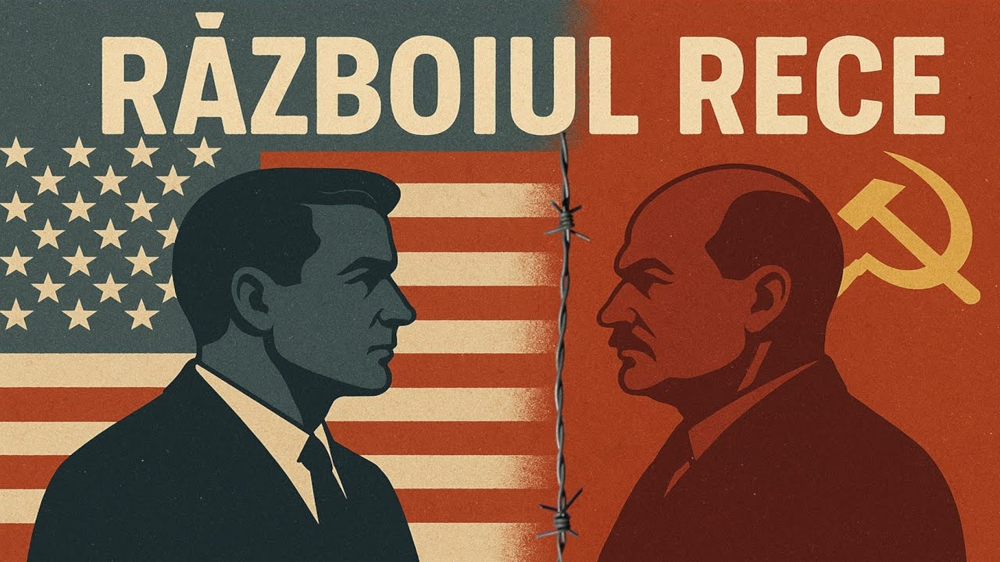

- Ce a fost Războiul Rece? – O stare de tensiune politică, militară, economică și ideologică între Statele Unite ale Americii (blocul capitalist) și Uniunea Sovietică (blocul comunist), desfășurată între 1947 și 1991, fără un conflict armat direct între cele două superputeri.
- Originea termenului – Expresia „Război Rece" a fost popularizată de jurnalistul american Walter Lippmann în 1947 și descrie un conflict purtat prin presiuni diplomatice, cursa înarmării, propagandă și războaie prin interpuși, fără luptă deschisă pe câmpul de bătălie.
- Lumea împărțită în două – După cel de-Al Doilea Război Mondial, Europa a fost divizată de „Cortina de Fier", linie simbolică care separa statele democratice din Vest de cele controlate de Moscova din Est. Berlinul a devenit simbolul cel mai puternic al acestei diviziuni.
- Importanța subiectului – Războiul Rece a influențat profund harta politică a lumii, a determinat cursa spațială, dezvoltarea armelor nucleare și a generat conflicte regionale majore (Coreea, Vietnam, Afganistan). Înțelegerea sa ajută la decodarea relațiilor internaționale actuale.
